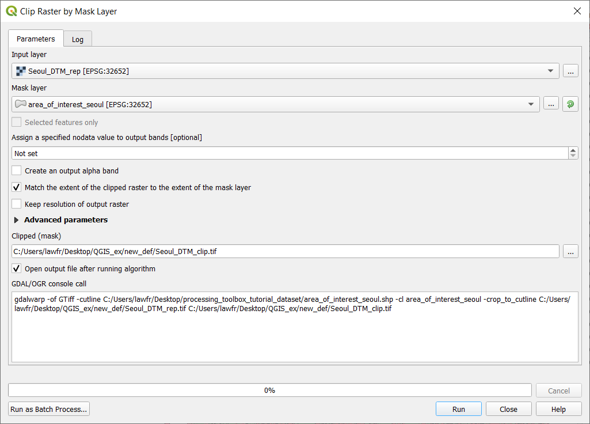

2. Preparation¶
In this section we will show all the necessary setup steps in order to follow along the QGIS exercise.
2.1. Install QGIS¶
Download QGIS 3.14 (Long Term Release) for Windows 64bit at https://qgis.org/downloads/QGIS-OSGeo4W-3.14.0-1-Setup-x86_64.exe. Other versions are available in the QGIS Download page.
Note
After downloading QGIS, you will have various option to launch the program, as you see in this image:

In order to complete this exercise be sure to launch the one with GRASS since we will need some functionalities that are only available using the tools that GRASS offers.
2.2. Download the data¶
The dataset used in the following exercises can be downloaded here; it covers an area around the city of Seoul in South Korea and contains three different type of information:
- Landsat8 images in the folder
LC08_L1TP_115034_20180721_20180731_01_T1: it contains all the 11 available bands of the Landsat8 images in WGS84/UTM zone 52N coordinate system EPSG:32652.- Aster Digital Elevation map (DTM at a resolution of 20 m)
Seoul_DTM.tif: a geotif in LongLat WGS84 coordinate system EPSG:4326.- Open Street Map vector dataset in the folder
south-korea-latest-free.shp: these are 8 shapefiles downloaded from the OSM website. The files are in LongLat WGS84 coordinate system EPSG:4326.Here we illustrate the
Datafolder tree structure:Data ├── RASTER │ ├── Landsat8_20160519_20170324_01_T1 │ │ ├── LC08_L1TP_116034_20160519_20170324_01_T1_ANG.txt │ │ ├── LC08_L1TP_116034_20160519_20170324_01_T1_B10.TIF │ │ ├── LC08_L1TP_116034_20160519_20170324_01_T1_B11.TIF │ │ ├── LC08_L1TP_116034_20160519_20170324_01_T1_B1.TIF │ │ ├── LC08_L1TP_116034_20160519_20170324_01_T1_B2.TIF │ │ ├── LC08_L1TP_116034_20160519_20170324_01_T1_B3.TIF │ │ ├── LC08_L1TP_116034_20160519_20170324_01_T1_B4.TIF │ │ ├── LC08_L1TP_116034_20160519_20170324_01_T1_B5.TIF │ │ ├── LC08_L1TP_116034_20160519_20170324_01_T1_B6.TIF │ │ ├── LC08_L1TP_116034_20160519_20170324_01_T1_B7.TIF │ │ ├── LC08_L1TP_116034_20160519_20170324_01_T1_B8.TIF │ │ ├── LC08_L1TP_116034_20160519_20170324_01_T1_B9.TIF │ │ ├── LC08_L1TP_116034_20160519_20170324_01_T1_BQA.TIF │ │ └── LC08_L1TP_116034_20160519_20170324_01_T1_MTL.txt │ └── Seoul_DTM.tif └── VECTOR └── south-korea-latest-free.shp ├── buildings_a.cpg ├── buildings_a.dbf ├── buildings_a.prj ├── buildings_a.shp ├── buildings_a.shx ├── landuse_a.cpg ├── landuse_a.dbf ├── landuse_a.prj ├── landuse_a.shp ├── landuse_a.shx ├── natural.cpg ├── natural.dbf ├── natural.prj ├── natural.shp ├── natural.shx ├── places.cpg ├── places.dbf ├── places.prj ├── places.shp ├── places.shx ├── pofw_a.cpg ├── pofw_a.dbf ├── pofw_a.prj ├── pofw_a.shp ├── pofw_a.shx ├── pois_a.cpg ├── pois_a.dbf ├── pois_a.prj ├── pois_a.shp ├── pois_a.shx ├── README ├── roads.cpg ├── roads.dbf ├── roads.prj ├── roads.shp ├── roads.shx ├── water_a.cpg ├── water_a.dbf ├── water_a.prj ├── water_a.shp └── water_a.shx
2.3. Create a new project¶
Before starting with the analysis of the data, we have to set up a new Project. To do so, run QGIS with GRASS and click on New Project (or press Ctrl+N).

Fig. 2.3.1 Create a new project
2.3.1. Import vector data¶
To import vector data, go to Layer->Add layer->Add vector layer or use the Browser panel (usually placed above the Layer Panel on the left side of the screen; if not, you can enable it by clicking View->Panels and tick “Browser panel”). In the Browser, you can search the data folder and simply drag and drop the files in the map.

Fig. 2.3.1.1 Add a vector layer

Fig. 2.3.1.2 The Browser panel
For this excercise, we will use the following layers:
buildings_a.shplanduse_a.shpnatural.shpplaces.shppofw_a.shppois_a.shproads.shpwater_a.shp
2.3.2. Import raster data¶
To import raster data, you can go to Layer->Add layer->Add raster layer or drag and drop them from the Browser panel. For this exercise, you can add the following data:
Seoul_DTM.tif
2.3.3. Layers panel¶
The Layers panel is a useful way to keep track of all the layers currently loaded in our Project. It’s usually placed below the Browser panel, but if you don’t have it activated you can do so by clicking on View->Panels and tick “Layers”.
Once you add all the data it should look like this:

Fig. 2.3.3.1 The Layers panel
The Layers panel can also be used to choose which layers we want to see in our map: just by unticking a layer we hide it from our map. Also, we can choose the order of the layers, because layers can overlap and hide portions of each other, so it’s important to decide which one is visualized on top of the others. To do so, you can select the layer you want to change and use the arrow symbols, or simply drag the layer in the position you want it to be.
Note
If the Project CRS (that can be seen in the bottom right corner of the window) is not specified, when importing the first layer QGIS will set the Project CRS to the CRS of that first layer. From then onwards, QGIS automatically reprojects any imported layer in the projection of the Project but only for visualization, the data remain in the original projection.
Once all the data are added, the map should look like this:

We can now save our project (Project->Save or Ctrl+s) so that you will have all the added layers and progress always available by just opening the saved project. Remember to do this from time to time during the exercise.
Note
When saving a project, QGIS creates a .qgz file, that represents the saved project. Note that this file does not contain directly all
the added layers, but it records the path necessary to reach each one of the layers, enabling QGIS to include them when opening the saved project.
2.4. Manipulate CRS of the project and the data¶
The data we use in our geo-analyses often come from different sources, and therefore also have a different Coordinate Reference System (CRS). In order to homogenize the works and assure that all the tools work correctly, it is recommended to reproject all the data in the same CRS.
2.4.1. Reprojecting vector layers¶
This tool is available at Vector->Data management tools->Reproject layer. It provides a function that reprojects a vector layer, creating a new layer with the same features as the input one, but with geometries reprojected to a new CRS. The required input parameters are:
- Input layer: the vector layer to be reprojected (in the example :file`buildings_a`)
- Target CRS: the target Coordinate Reference System. You can choose from the recent ones in the dropdown menu or click the icon to choose between all the available ones. Our choice will be EPSG:32652 - WGS 84 / UTM zone 52N
- Reprojected: the path and the name of the output raster layer. Note that if left empty a temporary layer will be created

Fig. 2.4.1.1 Reproject layer function window
2.4.2. Reprojecting raster layers¶
Available at Raster->Projections->Warp (reproject), it provides a function that reprojects a raster layer. The tool requires as input:
- Input layer: the raster layer to be reprojected (in the example the
Seoul_DTM)- Target CRS: the target Coordinate Reference System. You can choose from the recent ones in the dropdown menu or click the icon to choose between all the available ones. Our choice will be EPSG:32652 - WGS 84 / UTM zone 52N
- Resampling method to use: the method to be used for resampling the data, we will use the Nearest Neighbor
- Reprojected: the path and the name of the output raster layer. Note that if left empty a temporary layer will be created

Fig. 2.4.2.1 Reproject raster function window
In order to continue with the tutorial please reproject all the imported vector and raster layers following the examples above. Once all the layers are reprojected we need to check if the CRS of the project is the same as the data: to do so, click on the CRS setting button in the bottom right of the window and select also here EPSG:32652 - WGS 84 / UTM zone 52N.

Note
In this exercise we will refer to the reprojected layers as originalname_rep.
You can create your new layers with the same name in order to be consistent with the naming.
Note
After reprojecting all the layers be sure to delete the original layers. You can do this by simply selecting the layers you want to delete in the Layer panel and then click on the Remove layer/Group button.

2.5. Clip all the data to the study area¶
Often the data provided is in a wider area than the one needed, so we can define an area of interest and clip all the layers to that same area; in this way we shorten computational times and also provide consistency to the data.
2.5.1. Create the working area¶
We will create a vector polygon layer, in the shape of a rectangle, that will represent the area we are considering in this tutorial. In order to do so:
Create a vector layer using Layer->Create Layer->New shapefile layer or use the shortcut symbol
Specify its characteristics as follows:
- File name:
path/area_of_interest.shp- File encoding: System
- Geometry type: Polygon
- The CRS should be by default set to the one of the maps but check it to be EPSG:32652 - WGS 84 / UTM zone 52N

Click “Ok”
Once you created the layer, you need to add the polygon representing the working area:
- Right click on
area_of_interestin the Layers panel and select “Toggle editing”- Right-click anywhere on the top toolbar (or go to View->Toolbars and add it from there) and enable the “Shape digitizing toolbar”. This way we can add a perfect rectangle polygon to our shapefile
- Click on “Add rectangle from extent”

- Draw a rectangle in the area around Seoul by left-clicking to start drawing from an angle and then right-clicking when the size is the desired one (not too big, take the picture below as reference)

- Click on “Save layer edits” and toggle editing off
Now that you have your working area layer we can clip all our layers to it.

2.5.2. Clipping vector layers¶
Available at Vector->Geoprocessing tools->Clip. It provides an algorithm that clips a vector layer using the features of another polygon layer. Only the parts of the features in the Input layer that fall within the polygons of the Overlay layer will be added to the resulting layer. The attributes of the features are not modified, although properties such as area or length of the features will be modified by the clipping operation. The input parameters are:
- Input layer: the vector layer to be clipped (in the example
landuse_a_rep). You can also choose to clip only the selected features of the vector layer if there are any- Overlay layer: the
area_of_interestlayer- Clipped: the path and the name of the output vector layer. Note that if left empty a temporary layer will be created

Fig. 2.5.2.1 Clip vector function layer
2.5.3. Clipping raster layers¶
Available at Raster->Extraction->Clip raster by mask layer, it provides an algorithm that clips a raster layer using a vector layer as a mask. The input parameters are:
- Input layer: the raster layer to be clipped (in the example
Seoul_DTM_rep)- Mask layer: the
area_of_interestlayer- Clipped (extent): the path and the name of the output raster layer. Note that if left empty a temporary layer will be created
Fig. 2.5.3.1 Clip raster by mask layer function window
{kind=link}
In order to continue with the tutorial please clip all the vector and the DTM raster layer following the examples above.
Note
In this exercise we will refer to the clipped layers as originalname_clip. You can create your
new layers with the same name in order to be consistent with the naming
Note
After clipping all the layers you can delete the starting layers from the Layers panel.
The final configuration of the application and data should be like the one in the next image.